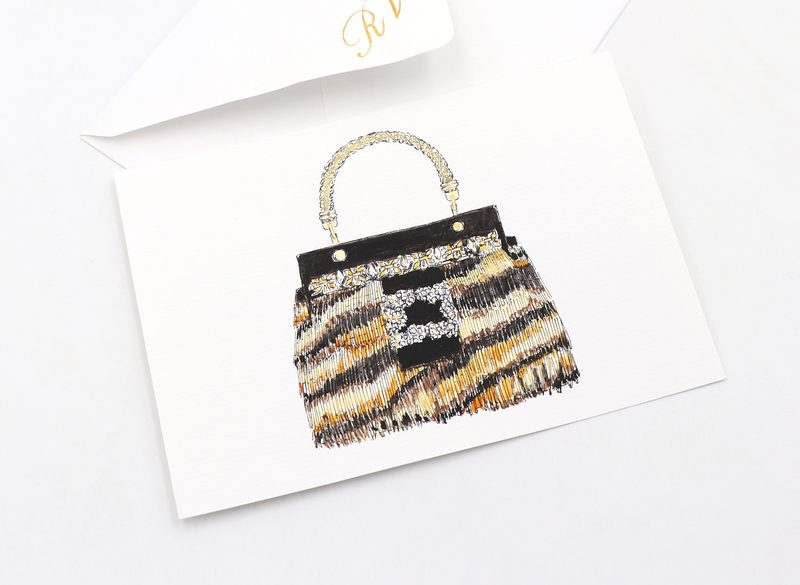
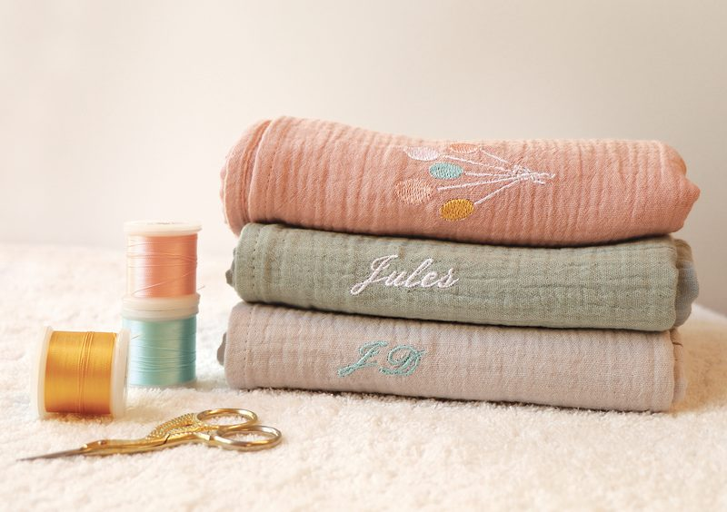
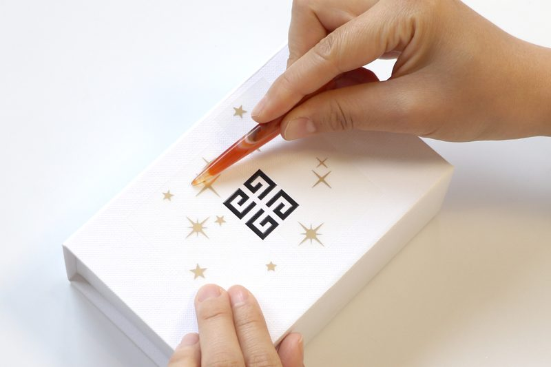

NOS ATELIERS SIGNATURES
Cobalt Création met à votre disposition tout son savoir-faire afin de donner vie à vos projets uniques.
Immédiatement disponibles, efficaces et parfaitement conçus, nos Ateliers Signatures, pensés autour de l’art et de l’artisanat français, s’adaptent à votre direction artistique et à votre stratégie marketing.
Grâce à nos artistes et artisans d’exception formés chez nous, vos clients vivront des moments uniques et personnalisés, ressentant le privilège d’une attention exclusive.






